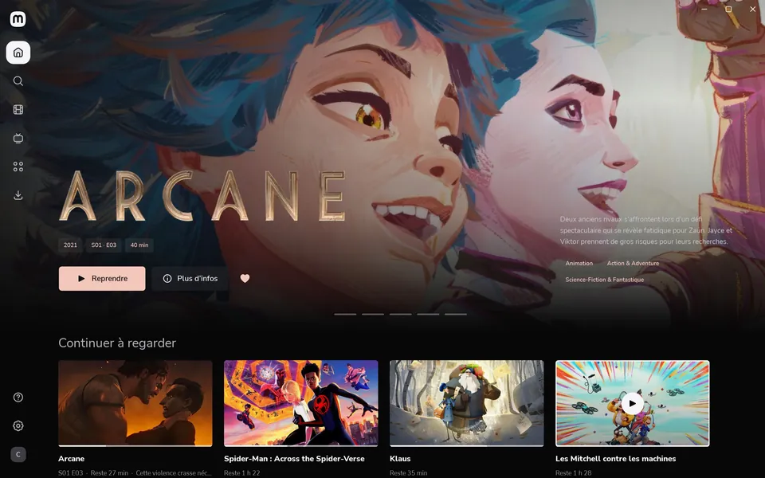
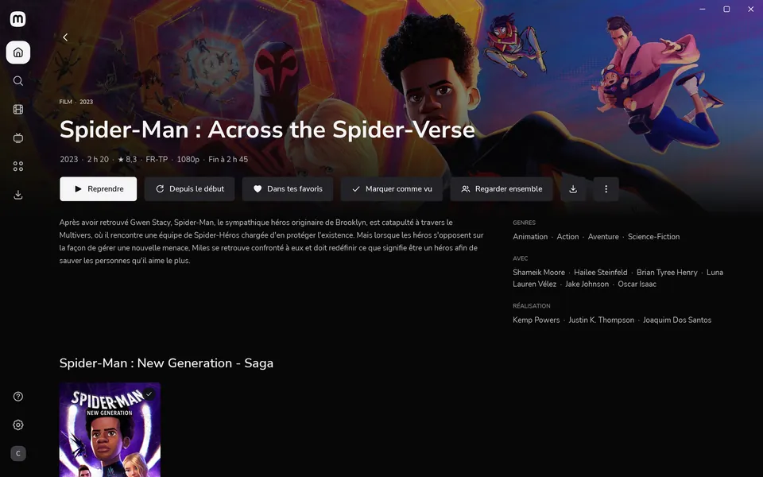
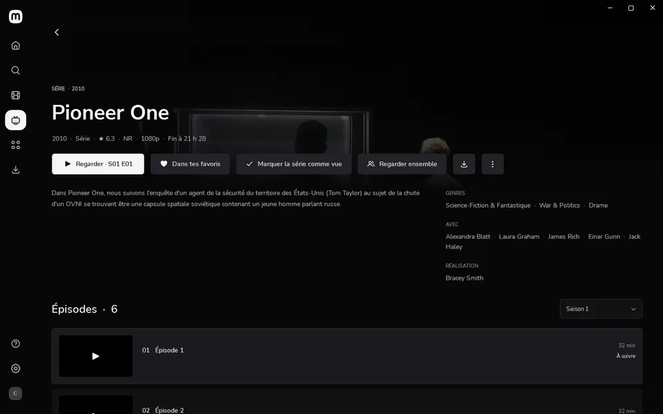
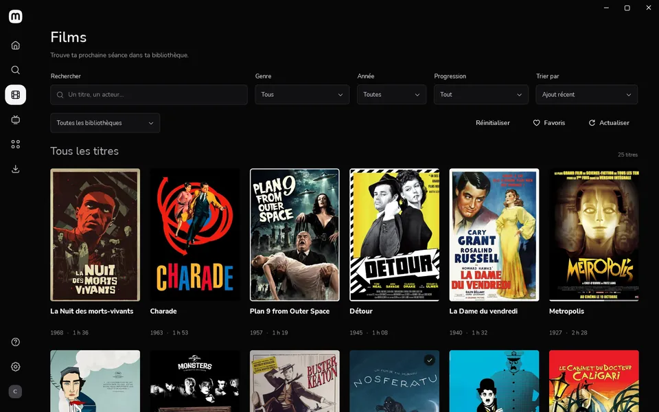
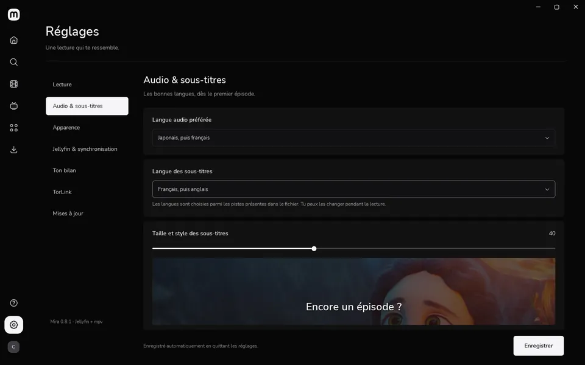

Screen 1Your device
Windows
Windows 10 or 11, x64
The installer, then Mira keeps itself up to date.
A private screening, at home
The Jellyfin client for Windows, Mac, iPhone and Android
Your Jellyfin library, like at the movies.
Chapter 1
A cinema in a window.
Mira for Windows and Mac plays everything itself, with the mpv engine: almost any file, as it is.

Posters, large artwork, summaries, cast and sagas: your library looks like a streaming service, with nothing to set up.

On the PC, the Mac or the phone, Continue watching takes you back to the right minute. You see when it ends before you even press play.

Intros are skipped in one gesture, and each series keeps its own languages: the anime in Japanese, the sitcom in English.

Search, filters and sorting for hundreds of titles, and a library kept on disk: it opens even while the server sleeps.

Audio tracks, subtitles at your size, chapters and previews on the seek bar: playback happens in Mira, not in a browser.
Chapter 2
In your pocket, no App Store.
Mira web is served by your own Jellyfin server. On iPhone it opens like an app from the Home Screen. On Android too.
Mira for Windows installs and prepares it, then Set everything up takes care of the rest for the phone. One Windows prompt, and it’s ready.
In Mira for Windows: Guide, then Mira on your phone. The camera opens Mira web, already at the right address.
Share, then Add to Home Screen: it opens like an app, at home or anywhere with Tailscale.
Chapter 3
The same film, each at home.
Make a group, send the link. Your friend opens it, and you watch at the same moment. A pause on one side pauses the other.
Together · playing in sync
Try it: pause one side.
Chapter 4
Nothing leaves your server.
Your library, what you watch and when: it all stays between your devices and your Jellyfin.
This screening is private
Projection: your Jellyfin server · In the room: you and your guests
Chapter 5
Pick your screen.
Mira __VERSION__, free and open source. You need a Jellyfin 10.9 server or newer, or let Mira for Windows install it.
Screen 1Your device
Windows 10 or 11, x64
The installer, then Mira keeps itself up to date.
Screen 2Your device
Apple silicon, macOS 15 or later
Drag Mira to Applications, then allow it once: it isn’t signed by Apple.
Screen 3Your device
Nothing to download
Mira web comes from your server: in Mira for Windows, Guide, then Mira on your phone, and scan the QR code.
The Windows files aren’t signed yet: SmartScreen may ask for confirmation (More info, then Run anyway). Each version publishes its SHA-256 checksums in an immutable release on GitHub.